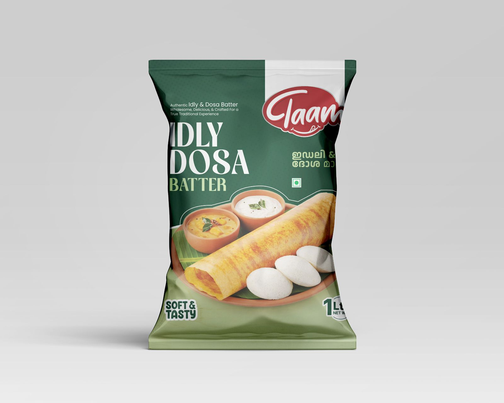
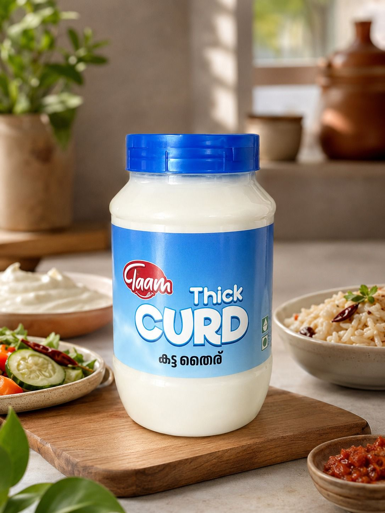
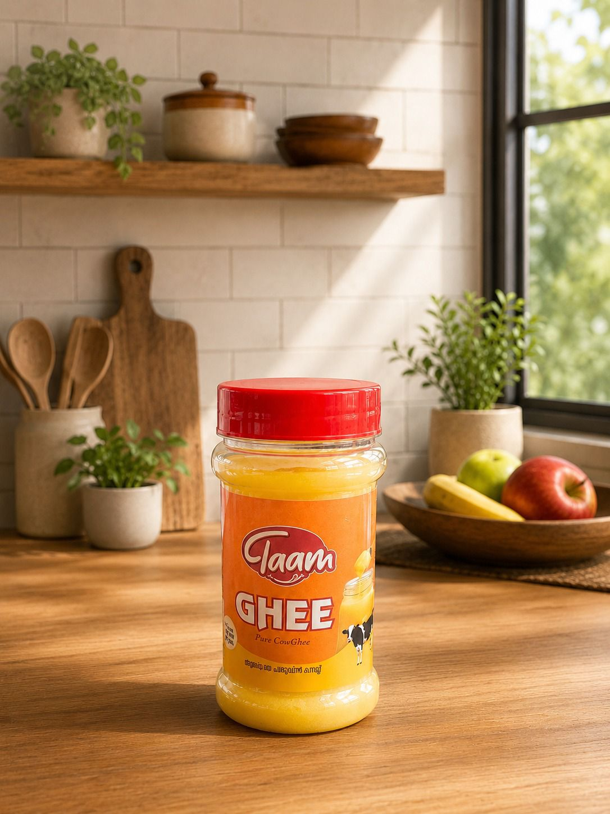
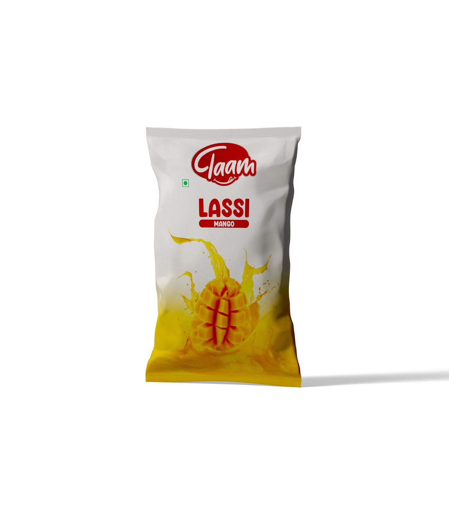
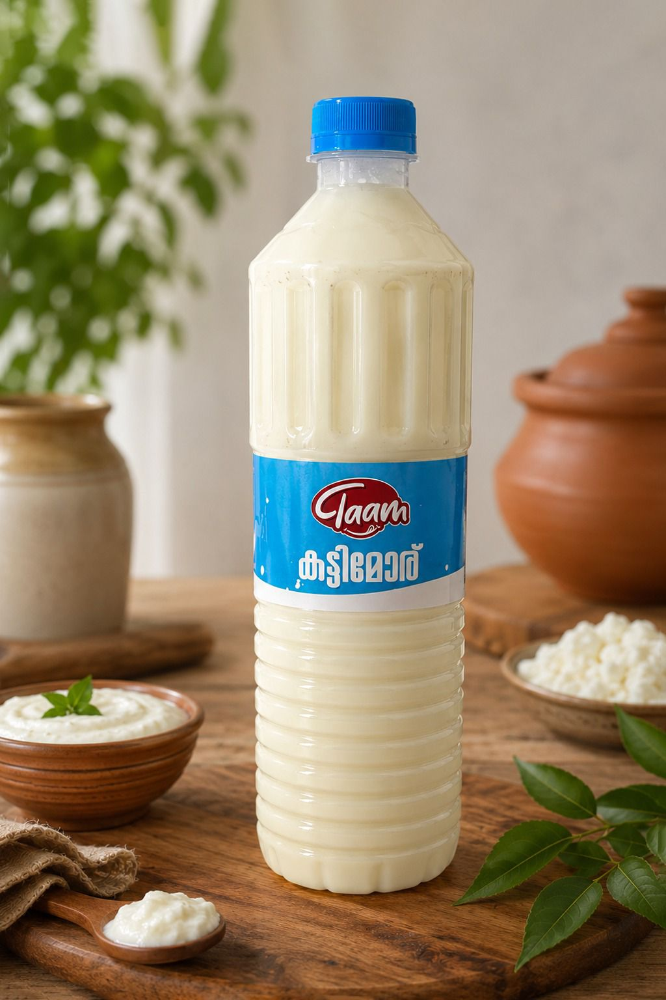
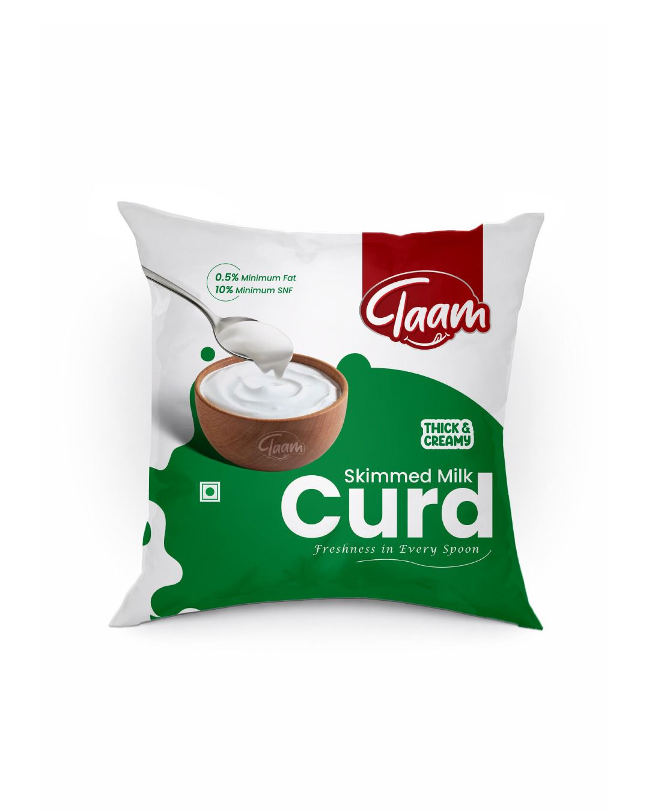
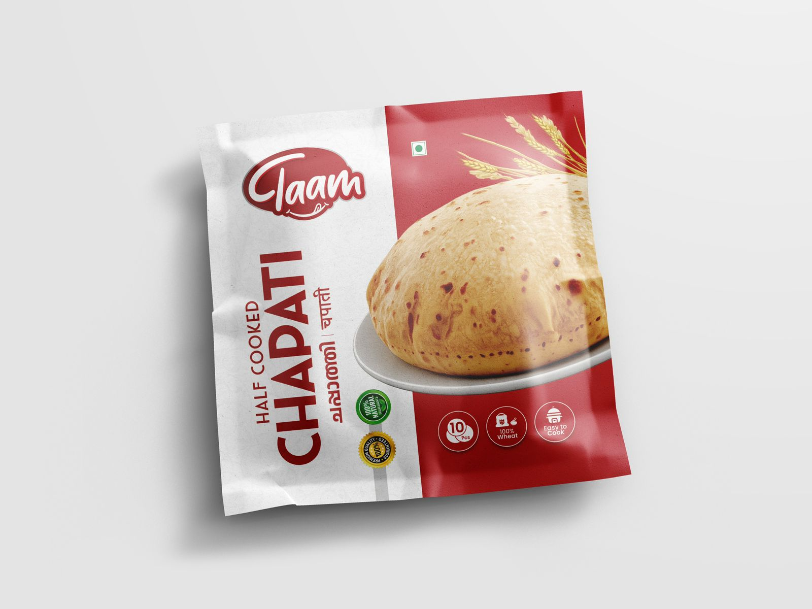
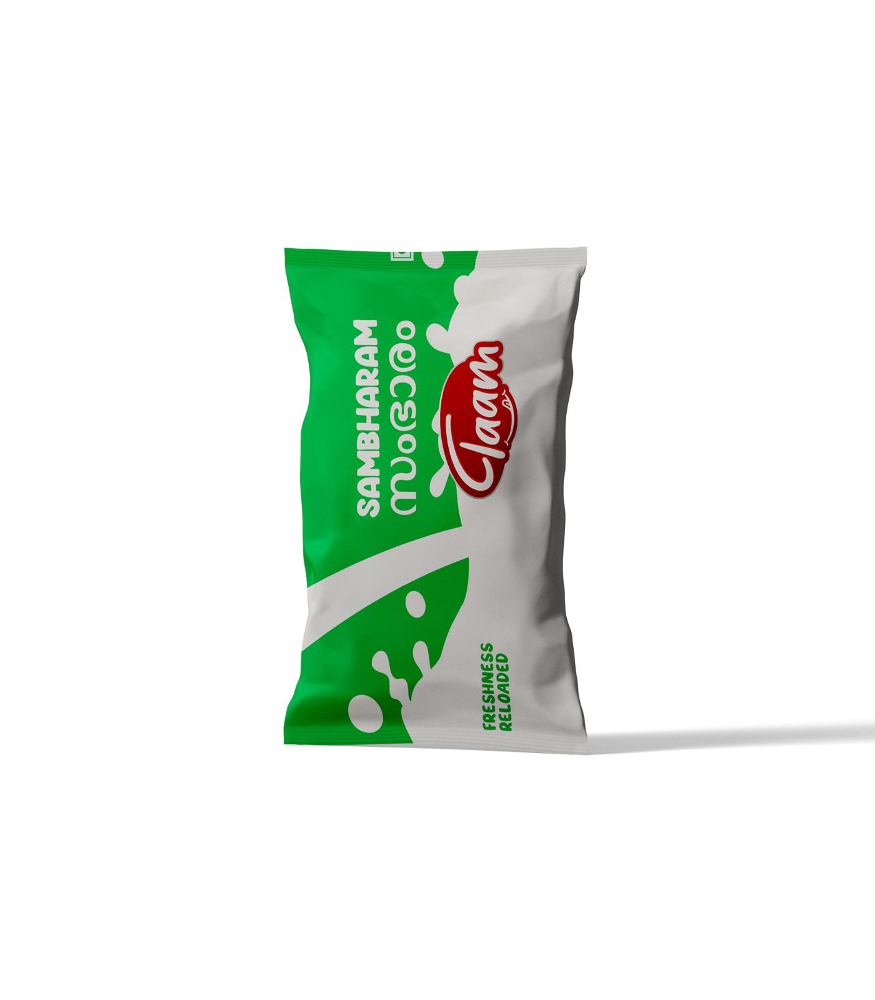

Ready-to-cook
Idly & Dosa Batter ഇഡ്ഡലി & ദോശ മാവ്
Stone-style fermented batter for soft idly and crisp golden dosa — breakfast made easy.
Order on WhatsAppMade fresh every morning in Malappuram, Kerala
നാടന് രുചി, ദിവസവും പുതുമ
Curd, ghee, idly-dosa batter, chapati and cooling drinks like kittimoru and sambharam — made the way Kerala kitchens love, for homes, stores and food-service across the state.
Team Sithara Business Park, Malappuram

Breakfast Batter & chapati
Dairy essentials Curd, moru & ghee
Pure cow ghee For cooking & topping
Cooling drinks Lassi & sambharamOur range
From morning breakfast to a cooling glass of moru — pick what your home, store or kitchen needs.
Stone-style fermented batter for soft idly and crisp golden dosa — breakfast made easy.
Order on WhatsAppRich, set curd for meals, sides and everyday kitchen prep. Thick the way it should be.
Order on WhatsAppAromatic, golden cow ghee for cooking, tempering and festive sweets. A little goes a long way.
Order on WhatsApp
Cooling, lightly spiced buttermilk — the classic Kerala refresher for any time of day.
Order on WhatsApp
A lighter, value-friendly curd for daily household and food-service use.
Order on WhatsApp
Soft wheat chapati that's ready in a minute on the tawa — perfect for busy homes and canteens.
Order on WhatsAppThick, fruity mango lassi — a sweet, chilled treat that flies off the counter.
Order on WhatsApp
Traditional spiced buttermilk with ginger, curry leaf and green chilli — cooling on a hot Kerala day.
Order on WhatsAppOur story
Taam Food Products LLP began with a simple idea — give Kerala families the fresh curd, ghee and breakfast staples they grew up with, made cleanly and delivered fresh. Every batch is prepared daily at our unit in Malappuram, packed the same day, and kept chilled until it reaches you.
No milk powder, no shortcuts — just honest, familiar taste you can put on your table and on your shelf with confidence.
Through the day
A simple Taam line-up covers every part of a Kerala day — and keeps customers coming back.
Idly & dosa batter and half-cooked chapati for quick home and canteen prep.
Thick curd, skimmed milk curd and ghee for everyday cooking and meal pairing.
Kittimoru, mango lassi and sambharam for that grab-and-go glass.
Why Taam
We make the things people reach for every day — curd for meals, batter for breakfast, ghee for cooking, chapati for speed, and chilled drinks for refreshment. Done simply, and done well.
Daily batches and chilled handling mean what you get tastes the way it should.
Real milk and simple recipes — no powder, no unnecessary additives.
Clear names, familiar flavours and clean packs make every product easy to pick.
For retailers & kitchens
Great for supermarkets, grocery stores, bakeries, hotels, cafeterias, catering kitchens and chilled food counters. Talk to us about supply, pack sizes and dealership.
Chilled staples and quick-moving packaged foods for neighbourhood retail.
Breakfast, meal prep and drink products for recurring kitchen workflows.
Enquiries for availability, supply and local dealership conversations.
Contact
Share your requirement for retail supply, food-service use, dealership enquiries or product availability. The fastest way to reach us is WhatsApp.
Taam Food Products LLP